The Good News According to
Mark
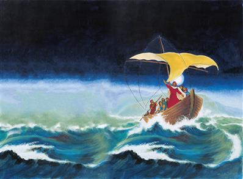
1
1 The first words of the good news of Jesus Christ, the Son of God. 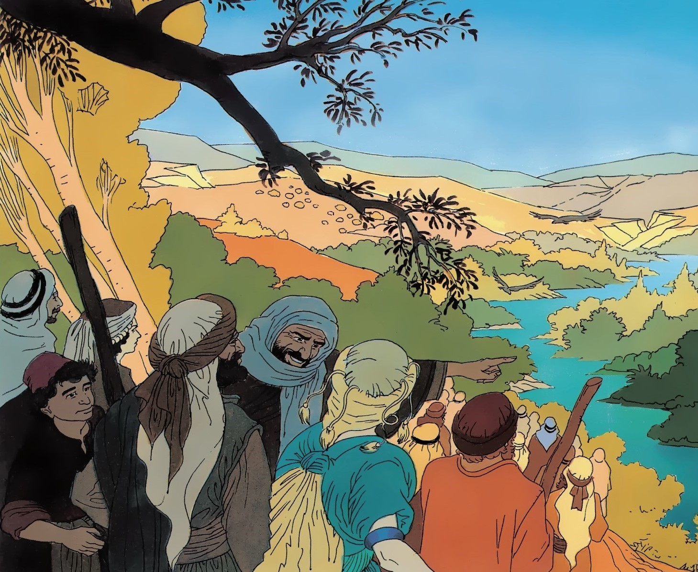
2 Even as it is said in the book of Isaiah the prophet, See, I send my servant before your face, who will make ready your way; 3 The voice of one crying in the waste land, Make ready the way of the Lord, make his roads straight; 4 John came, and gave baptism in the waste land, preaching baptism as a sign of forgiveness of sin for those whose hearts were changed. 5 And there went out to him all the people of Judaea, and all those of Jerusalem, and they were given baptism by him in the river Jordan, saying that they were sinners. 6 And John was clothed in camel's hair, with a leather band about him; and his food was locusts and honey. 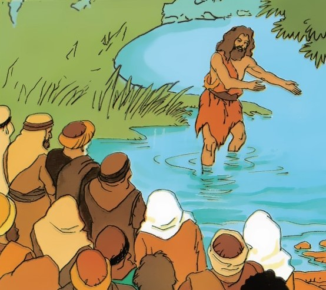
7 And he said to them all, There is one coming after me who is greater than I, whose shoes I am not good enough to undo. 8 I have given you baptism with water, but he will give you baptism with the Holy Spirit. 9 And it came about in those days, that Jesus came from Nazareth of Galilee, and was given baptism by John in the Jordan. 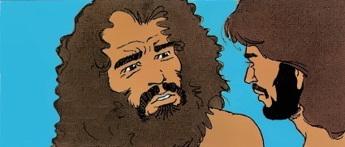
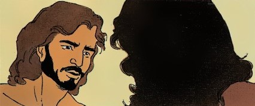
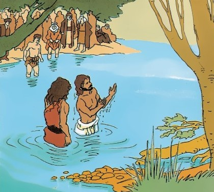
10 And straight away, coming up out of the water, he saw the heavens broken open and the Spirit coming down on him as a dove: 11 And a voice came out of heaven, You are my dearly loved Son, with whom I am well pleased. 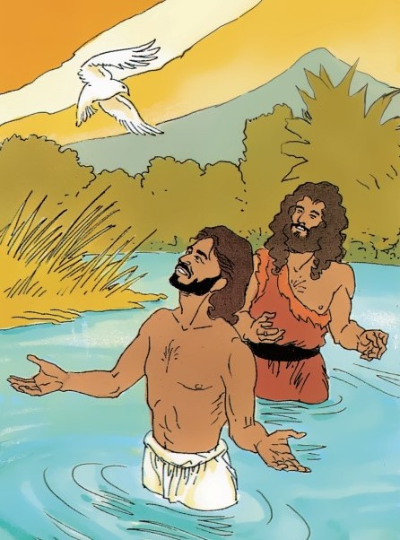
12 And straight away the Spirit sent him out into the waste land. 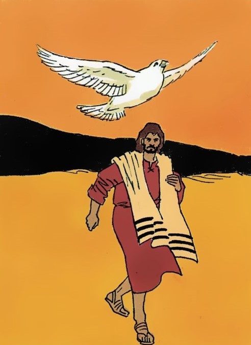
13 And he was in the waste land for forty days, being tested by Satan; and he was with the beasts; and the angels took care of him. 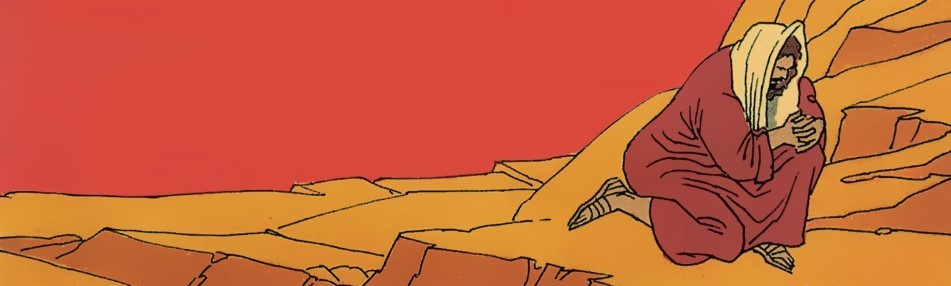
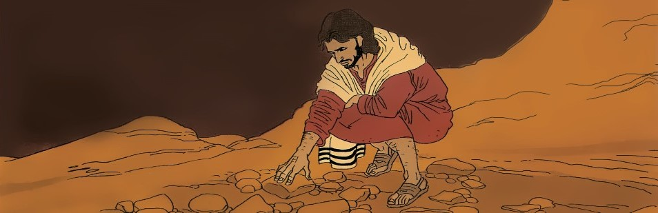
14 Now after John had been put in prison, Jesus came into Galilee, preaching the good news of God, 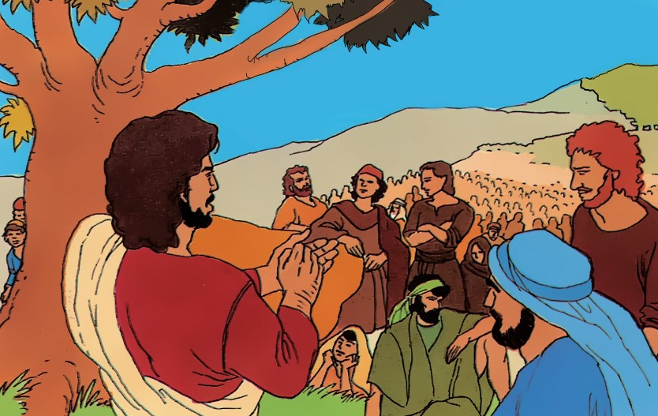
15 And saying, The time has come, and the kingdom of God is near: let your hearts be turned from sin and have faith in the good news. 16 And going by the sea of Galilee, he saw Simon, and Andrew, the brother of Simon, putting a net into the sea: for they were fishermen. 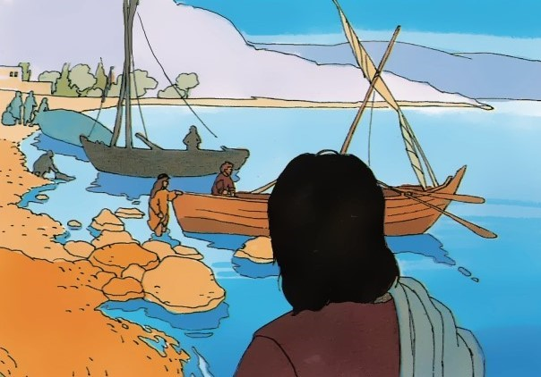
17 And Jesus said to them, Come after me, and I will make you fishers of men. 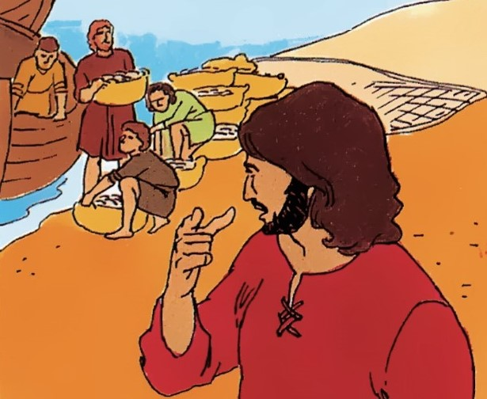
18 And they went straight from their nets, and came after him. 19 And going on a little farther, he saw James, the son of Zebedee, and John his brother, who were in their boat stitching up their nets. 20 And he said, Come after me: and they went away from their father Zebedee, who was in the boat with the servants, and came after him. 21 And they came to Capernaum; and on the Sabbath he went into the Synagogue and gave teaching. 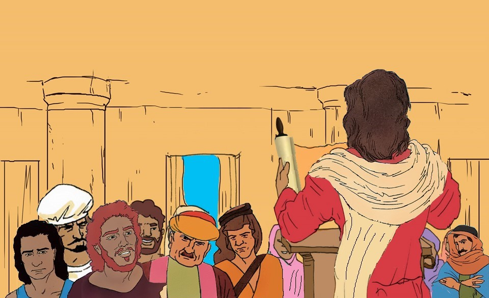
22 And they were full of wonder at his teaching, because he gave it as one having authority, and not like the scribes. 23 And there was in their Synagogue a man with an unclean spirit; and he gave a cry, 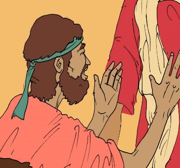
24 Saying, What have we to do with you, Jesus of Nazareth? have you come to put an end to us? I see well who you are, the Holy One of God. 25 And Jesus said to him sharply, Be quiet, and come out of him. 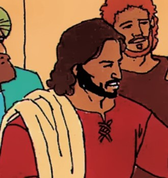
26 And the unclean spirit, shaking him violently, and crying with a loud voice, came out of him. 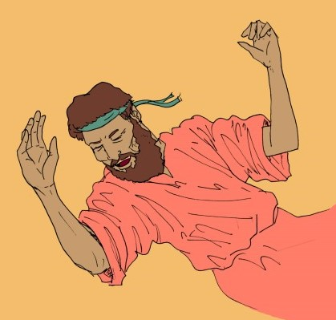
27 And they were all greatly surprised, so that they put questions to one another, saying, What is this? a new teaching! with authority he gives orders even to the unclean spirits, and they do what he says. 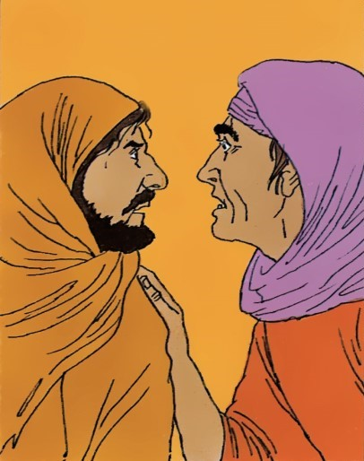
28 And news of him went out quickly everywhere into all parts of Galilee round about. 29 And when they came out of the Synagogue, they went into the house of Simon and Andrew, with James and John. 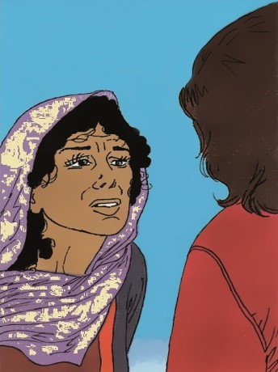
30 Now Simon's wife's mother was ill, with a burning heat; and they gave him word of her: 31 And he came and took her by the hand, lifting her up; and she became well, and took care of their needs. 32 And in the evening, at sundown, they took to him all who were diseased, and those who had evil spirits. 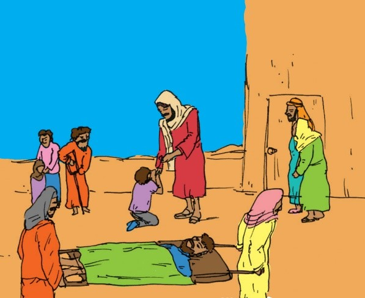
33 And all the town had come together at the door. 34 And a number, who were ill with different diseases, he made well, and sent out evil spirits; but he did not let the evil spirits say anything, because they had knowledge of him. 35 And in the morning, a long time before daylight, he got up and went out to a quiet place, and there he gave himself up to prayer. 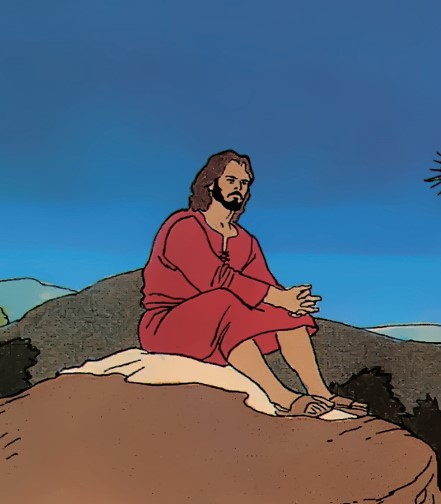
36 And Simon and those who were with him came after him. 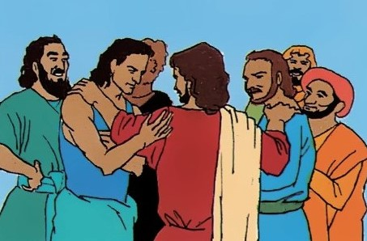
37 And when they came up with him, they said to him, Everyone is looking for you. 38 And he said to them, Let us go to other parts into the nearest towns, so that I may give teaching there, because for this purpose I came. 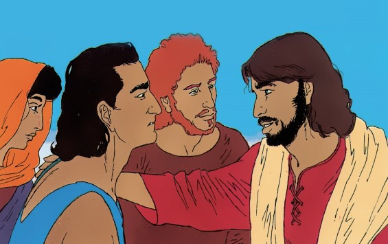
39 And he went into their Synagogues in every part of Galilee, preaching and driving out evil spirits. 40 And a leper came to him and, going down on his knees before him, made a request, saying, If it is your pleasure, you have the power to make me clean. 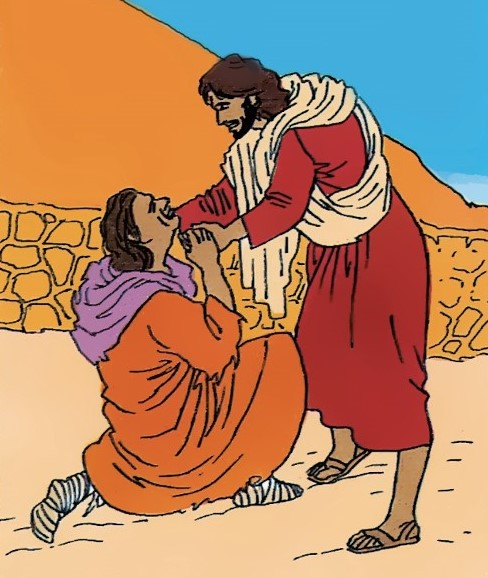
41 And being moved with pity, he put out his hand, and touching him said to him, It is my pleasure; be made clean. 42 And straight away the disease went from him, and he was made clean. 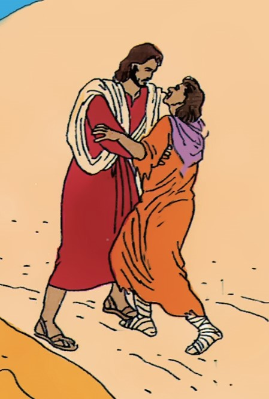
43 And he sent him away, saying to him very sharply, 44 See that you say nothing to any man: but go and let the priest see you, and make yourself clean by an offering of the things ordered by Moses, for a witness to them. 45 But he went out, and made it public, giving an account of it everywhere, so that Jesus was no longer able to go openly into a town, but was outside in the waste land; and they came to him from every part.